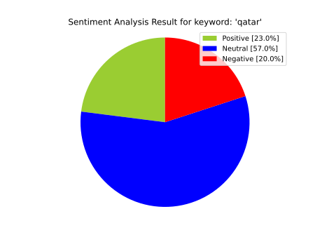

<!-- Sentimental analysis and word cloud -->
<div class="d-flex" style="visibility: {{ filterDatas['SAGraphsVisibility'] }};">
	<div class="container">
		<!-- Word cloud -->
		<h2 class="display-5 text-center py-3"><b>Word cloud</b></h2>
		<div class="row py-3" id="wordCloud">
			<div class="col-1"></div>
			<div class="col">
				
			</div>
			<!-- <div class="col py-3">
				<p>*Spiegazione dell'imagine*</p>
			</div> -->
			<div class="col-1"></div>
		</div>
		<div class="container">
			<!-- Sentimental analysis image and stats -->
			<h2 class="display-5 text-center py-3"><b>Sentiment analysis</b></h2>
			<div class="row" id="sentimentalAnalysis">
				<div class="col-1"></div>
				<div class="col">
					
				</div>
				<div class="col">
					<!-- <p>*Spiegazione dell'imagine*</p> -->
					<h3 class="my-3 display-7">Stats</h3>
					<p>On {{ sentimentalAnalysis['analysisReport']['analyzedTweets'] }} tweets analyzed:</p>
					<ul>
						<li><span style="color:dodgerblue;">{{ sentimentalAnalysis['analysisReport']['positivePercentage'] }}%</span> of tweets speak <b><i
									style="color:dodgerblue;">positively</i></b> about "{{ filterDatas['query'] }}"</li>
						<li><span style="color:coral;">{{ sentimentalAnalysis['analysisReport']['neutralPercentage'] }}%</span> of tweets speak <b><i
									style="color: coral;">neutral</i></b> about "{{ filterDatas['query'] }}"</li>
						<li><span style="color:green;">{{ sentimentalAnalysis['analysisReport']['negativePercentage'] }}%</span> of tweets speak <b><i
									style="color: green;">negatively</i></b> about "{{ filterDatas['query'] }}"</li>
					</ul>
				</div>
				<div class="col-1"></div>
			</div>
			<!-- Sentimental analysis table -->
			<div class="container py-3">
				<div class="row">
					<h3 class="my-3 text-center display-6">Table report</h3>
					<div class="panel panel-default mt-1">
						<div class="panel-body table-responsive">
							<table class="table table-bordered border-primary text-white rounded">
								<caption>Sentimental analysis table</caption>
								<tbody>
									<tr>
										<td><b>Index</b></td>
										{% for key in sentimentalAnalysis['analysisDatas'].keys() %}
										<th>{{ key }}</th>
										{% endfor %}
									</tr>
									{% for i, (user, text, polarity, sentiment) in zip(
									range(0, len(sentimentalAnalysis['analysisDatas']['users'])),
									zip(sentimentalAnalysis['analysisDatas']['users'],
									sentimentalAnalysis['analysisDatas']['texts'],
									sentimentalAnalysis['analysisDatas']['polarities'],
									sentimentalAnalysis['analysisDatas']['sentiments'])
									) %}
									<tr>
										<td>{{ i + 1 }}</td>
										<td>{{ user }}</td>
										<td>{{ text }}</td>
										<td>{{ polarity }}</td>
										{% if sentiment == 'positive' %}
										<td style="color:dodgerblue;">{{ sentiment }}</td>
										{% elif sentiment == 'neutral' %}
										<td style="color: coral;">{{ sentiment }}</td>
										{% elif sentiment == 'negative' %}
										<td style="color: green;">{{ sentiment }}</td>
										{% else %}
										<td>{{ sentiment }}</td>
										{% endif %}
									</tr>
									{% endfor %}
								</tbody>
							</table>
						</div>
					</div>
				</div>
			</div>
		</div>
	</div>
</div>